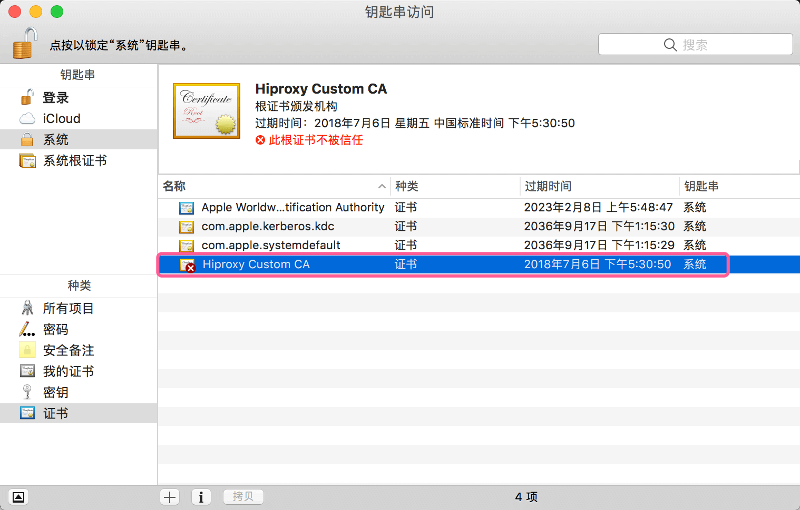
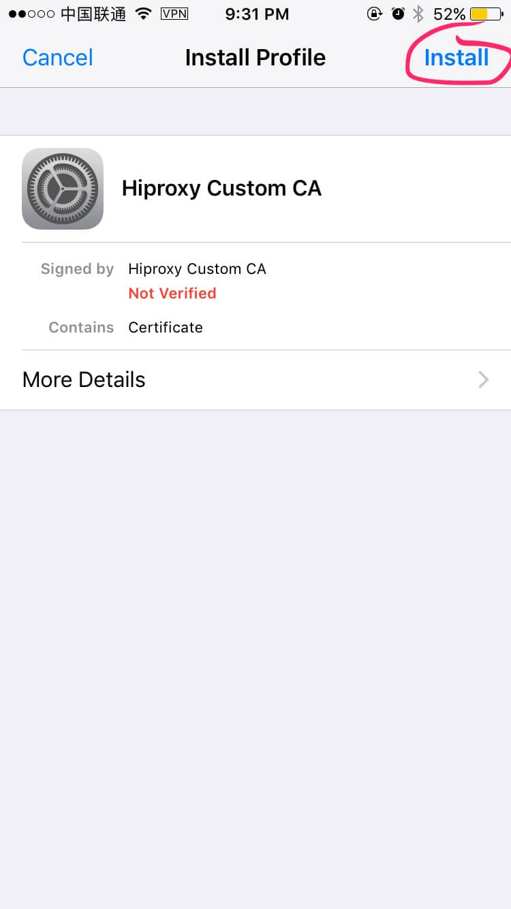
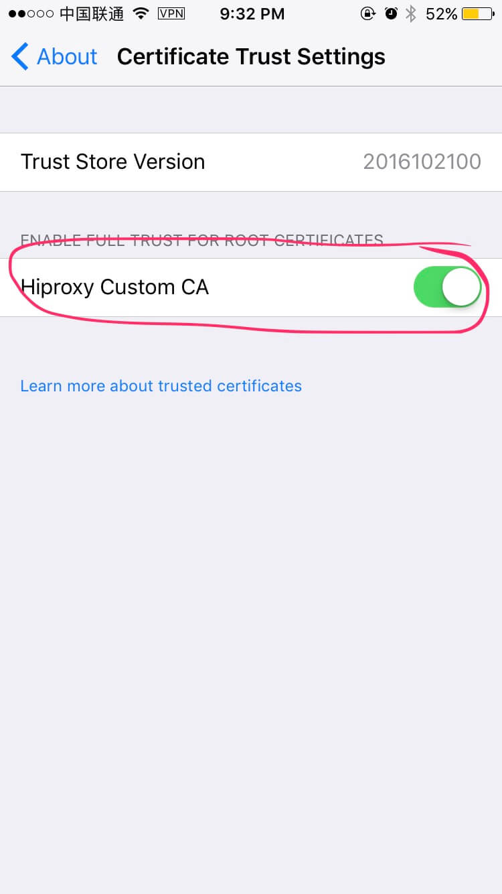
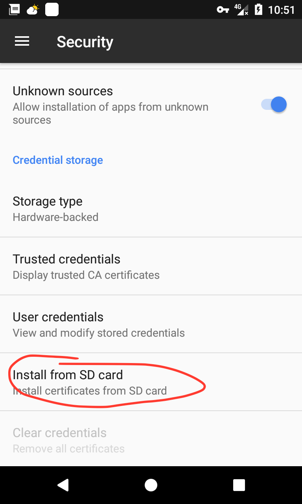

Get And Install SSL Certificate
如果你愿意帮助hiproxy编写文档，请联系zdying@live.com, 谢谢！
If you are willing to help hiproxy to write documentation, please contact zdying@live.com, thank you!
hiporxy会自己生成一个根证书，扮演CA的角色（Hiproxy Custom CA）。hiproxy在代理https请求的时候，会自动生成证书并使用hiproxy的根证书签名。
由于系统是不信任hiproxy根证书的，所以需要我们自己手动安装信任hiproxy的根证书。
下载证书
启动hiproxy服务之后（假设端口号是5525)，可以访问http://127.0.0.1:5525/ssl-certificate获取Hiproxy Custom CA的根证书。
这个地址，可以在http://127.0.0.1:5525/中找到，如下图：

安装证书
下面将分别介绍OSX、iOS、Windows和Android中如何安装根证书。
OSX系统
-
下载完成根证书之后，双击
Hiproxy_Custom_CA_Certificate.pem导入证书到钥匙串。 -
在弹出的对话框中输入用户密码。
-
此时证书是不受信任状态，双击刚才导入的证书。

- 在信任 > 使用此证书时下面选择始终信任。

- 关闭对话框，此时证书已经是被信任状态。

iOS系统
-
下载完成根证书之后发送到手机并打开。
-
点击右上角的安装。

- 再次点击右上角的安装。

- 完成安装，点击右上角完成退出。
- 如果iOS系统版本 >= 10.3，需要在设置 > 通用 > 关于本机中点击证书信任设置。

- 打开开关Hiproxy Custom CA。

Windows
-
下载完成根证书之后，双击
Hiproxy_Custom_CA_Certificate.crt安装证书。 -
在弹出的对话框中点击安装证书。

- 点击下一步。

- 选择将所有的证书放入下列存储(P)，点击浏览(R)，然后选择受信任的根证书颁发机构，点击确定。

- 点击下一步、完成。根据页面提示完成根证书安装。。

Android
-
下载完成根证书之后发送到手机。
-
在设置 > 安全中点击从SD卡安装。

- 输入解锁密码，然后输入证书名称，比如HiproxyCustomCA，点击确定。

- 在设置 > 安全 > 受信任的证书 > 用户中，如果能看到hiproxy的根证书，表示安装成功。